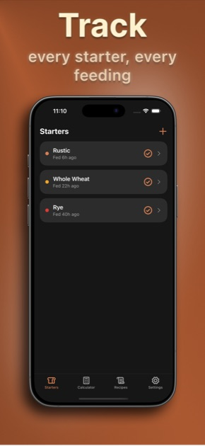
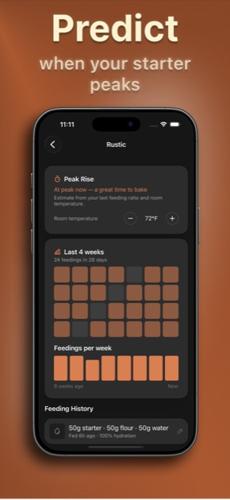
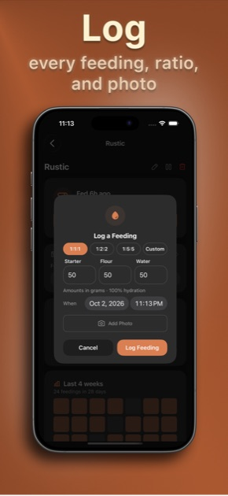
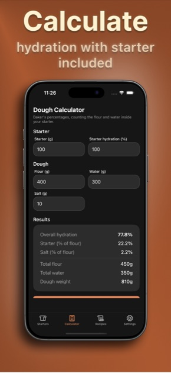
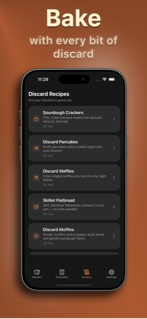

Sourdough Tracker:
Starter Feeding Log & Dough Calculator.
Log every sourdough starter feeding, get a reminder when it is hungry, see when it will peak, and calculate dough hydration with your starter already counted in.
No account required. No ads. Your first starter, feeding log, reminders and dough calculator are free.





Everything your starter needs.
A feeding log, reminders, a dough calculator and discard recipes in one app built for home bakers.
Feeding log
Record each feeding in one tap with flour, water, ratio and a photo. Your last amounts pre-fill the next feeding, and the full history shows what you did and how it rose.
Feed reminders
Set a feeding interval per starter and get a nudge right on time, so your starter never sits hungry. Pause any starter you are not feeding for a while.
Dough calculator
Baker's percentages that count the flour and water already inside your starter. Enter flour, water, salt and starter to see overall hydration, starter percentage and total dough weight.
Discard recipes
Put your discard to work: crackers, pancakes, waffles, flatbread, muffins, focaccia and pizza crust, each with ingredients, steps and timings.
How it works
-
Name your starter and set an interval
Add a starter, give it a name, and choose how often it needs feeding.
-
Log each feeding
Tap Feed Now, confirm the ratio and amounts, and optionally add a photo of how it looks.
-
Get reminded and watch it rise
A reminder arrives when your starter is hungry, and Pro estimates when it will peak so you bake at the right moment.
-
Mix your dough
Use the dough calculator to hit your target hydration with the starter already counted in.
Sourdough Tracker Pro
For bakers who keep more than one starter and want to know exactly when to bake.
- Unlimited starters, each on its own schedule
- Peak-rise estimate and feeding charts
- iCloud sync across your devices
- Every discard recipe
Frequently asked questions
How often should I feed my sourdough starter?
A starter kept at room temperature is usually fed once or twice a day, while one stored in the fridge is often fed about once a week. Sourdough Tracker lets you set a feeding interval per starter (12 hours, 24 hours, 48 hours or weekly) and sends a reminder when it is due, so a starter never sits hungry.
What feeding ratio should I use for a sourdough starter?
A feeding ratio is written starter : flour : water by weight. A 1:1:1 feeding uses equal weights of each and peaks fastest, while 1:2:2 and 1:5:5 feedings give the starter more fresh flour and take longer to peak. Sourdough Tracker has 1:1:1, 1:2:2, 1:5:5 and custom presets, and remembers your last amounts so a repeat feeding is one tap.
How do I know when my sourdough starter is at its peak?
A starter is at its peak when it has risen to its highest point, usually about double its starting height with a domed top, just before it begins to fall. The time it takes depends on the feeding ratio and the room temperature. Sourdough Tracker (Pro) estimates the peak window from your last feeding ratio and room temperature and tells you when it is time to bake. It is an estimate, not a measurement.
How do I calculate dough hydration with a sourdough starter?
Hydration is total water divided by total flour, as a percentage, and the flour and water already inside your starter count toward both totals. A 100% hydration starter is half flour and half water by weight. For example, 100 g of starter with 400 g of flour and 300 g of water works out to 450 g of total flour and 350 g of total water, or about 77.8% hydration. The dough calculator in Sourdough Tracker does this for you, along with starter percentage, salt percentage and total dough weight.
What can I do with sourdough discard?
Sourdough discard works well in crackers, pancakes, waffles, flatbread, muffins, focaccia and pizza crust. Sourdough Tracker includes step-by-step recipes for all of these, with ingredients and timings. The sourdough cracker recipe is free; Sourdough Tracker Pro unlocks the rest.
Is Sourdough Tracker free, and do I need an account?
You do not need an account. Your first starter, feeding log, feed reminders and dough calculator are free. Sourdough Tracker Pro unlocks unlimited starters, peak estimates and feeding charts, iCloud sync across your devices and every discard recipe. There are no ads.
Can I sync my sourdough starters between devices?
Yes, with Pro. Starters, feedings and photos sync across your devices through your own iCloud account, and you can export your feeding log as a CSV at any time. Data is otherwise stored on your device and is never sent to a Foster Apps server.
Support
Email SupportEmail support@fosterapps.com and include:
- A short description of what you were doing.
- Steps to reproduce the issue, if you know them.
- What you expected to happen vs what actually happened.
- Your device model and iOS version.
- Any screenshots that might help.
Privacy policy
Read the full policy at the Sourdough Tracker privacy page.